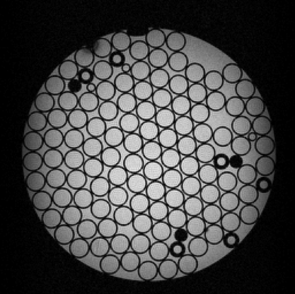

|
Open-source pulse sequences
Easily create and execute MR sequences
|
This project is an open source framework for the development and execution of magnetic resonance (MR) pulse sequences for imaging and spectroscopy. In summary, MRI sequence can be programmed directly in MATLAB and executed on real hardware.
A central contribution of this project is an open file format to compactly describe MR sequences suitable for execution on an MRI scanner. The detailed file specification can be obtained here: specification.pdf
The source code provides example implementations of this format. Code documentation is divided into MATLAB and C++ sections. Alternatively, sequences can be programming in JEMRIS using a graphical interface and exported to the Pulseq file format for execution.
Currently, Pulseq sequences can be executed on the following platforms. Please contact us if you would like to run open and flexible sequences at your institution.
Both MATLAB and C++ source code is available here: https://github.com/pulseq/pulseq. Alternatively, cloning the git repository directly:
git clone git@github.com:pulseq/pulseq.git
Run configure to prepare for building.
cd pulseq ./configure
Now run make to build the executables and/or documentation.
make
The MATLAB package mr provides extended functionality to create and visualize sequences as well as reading and writing sequence files.
 |  |
| Example design and visualization of an MRI sequence in MATLAB | Data acquired from the MATLAB sequence |
The C++ class ExternalSequence provides functionality to read a pulse sequence file and decompress the sequence blocks. This implementation is ideal for running MR sequences on different hardware platforms. The image above was acquired using the this class and vendor-specific interpreter code.